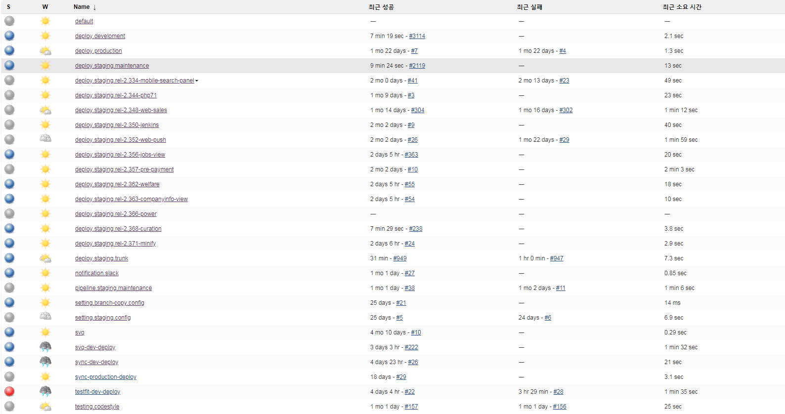

2019. 10. 01
이 글을 2017년? 2018년? 에 쓴 것 같은데...
DEVOPS 팀이 운영되는 회사에 와서 제대로된 환경을 경험해보니까 너무 형편없는 글이라는게 느껴진다. 언제가 될지 모르겠지만 추후에 글을 수정/ 추가해야겠다.
모바일 추천 STICKY 서비스를 무사히 런칭하고 몇개월전부터 계속해서 해보고 싶었던 기술연구소 배포환경 구축을 개인적으로 진행하게 되었다.
토이 프로젝트에 적용시켜본 경험도 있고 2개월 전에 사람인 기술연구소에서 해당 주제 (
기술연구소 배포환경 구축 제안) 를 가지고 발표해본 경험도 있기 때문에 다행히도 작업 진행에 큰 어려움을 느끼지는 않았다.
젠킨스의 플러그인 종류가 워낙 많기 때문에 한번에 모든 플러그인을 적용시키는 것은 어렵다고 판단하여 일단 기본적인 CI/CD 환경의 필수 플러그인들만 적용시키고 점차 늘려가는 방향으로 하고자 한다.
다시 돌아와서
이러한 작업을 하고자 했던 이유는 다음과 같다.
10년 넘는 기간동안 단순히 rsync 로만 수동 배포를 하는 방식이었기 때문에 만족스러운 형상관리가 되지 않고 있었고 더불어 JSLint, CSSLint, xUnit (JUnit, PhpUnit...) 등의 코드 품질을 관리하는 방식 또한 고려하지 못하고 있었다. 결과적으로 서비스가 거대해지고 있을뿐 관리는 제대로 되지 않았기 때문에 업무 효율성이 좋지 않았다.
이러한 문제점들을 해결해보고자 여러가지 설정을 하였으며 결과적으로 아래와 같은 프로세스로 진행하게 된다.
이해를 돕기위해 PowerPoint 로 작성하였다.
설정 방법은 다음과 같다.
1. 서버 및 젠킨스 설정
- 리눅스 서버 생성
- 관리자 권한을 취득하여 젠킨스 설치
- 젠킨스 Config 설정
(전역변수, 서버, SMTP, SLACK 등의 공통 설정)
2. 공통 Job 생성
- Job 이름 입력
- Freestyle Project 생성
3. 설정-일반 TAB
+ 이 빌드는 매개변수가 있습니다.
#SLACK CUSTOM MESSAGE 를 위한 메세지 입력 (선택)
- String Parameter
(Parameter Name = CUSTOM_MESSAGE, Default Value = ${JOB_NAME} Commit Succeed... Start Deploy!)
#서버별 설정을 위한 서버 번호 입력 (선택)
- String Parameter
(Parameter Name = STAGING_SERVER, Default Value = 2)
4. 설정-소스 코드 관리 TAB
#SVN 또는 GIT 소스코드 관리 설정
+ Subversion
- Repository URL: ${SVN_URL}/${JOB_NAME}
- Credentials: *
- Local module directory: branch_`date "+%y"`/${JOB_NAME}
- Repository depth: infinity
- Check-out Strategy: Use 'svn update' as much as possible
5. 설정-빌드 환경 TAB
#빌드가 오래걸릴 경우 별도로 처리
+ Abort the build if it's stuck
- Absolute (Timeout minutes = 20, actions = Fail, Abort)
6. 설정-빌드 유발 TAB
#긴급 배포를 위한 방법
+ 빌드를 원격으로 유발 (예: 스크립트 사용)
- 토큰값 입력
#자동 배포를 위한 방법 (커밋 발생할 경우 빌드 실행)
+ Poll SCM
- 스케줄 입력
---------------------------------
*/1 9-20 * * 1-5
월화수목금 (평일) 09시 ~ 20시 1분 간격
Ignore post-commit hooks check
---------------------------------
#어제 커밋했던 코드를 테스트하기 위한 설정 (일 1회/ JSLint, xUnit (JUnit, PhpUnit...), CSSLint)
+ Build periodically
- 스케줄 입력
---------------------------------
H 8 * * 1-5
월화수목금 (평일) 08시
---------------------------------
7. 설정-빌드 TAB
+ Execute Shell
#첫 빌드인 경우 JOB_NAME 으로 SLACK CHANNEL 생성
if [ ${BUILD_NUMBER} -eq 1 ]; then
sudo curl https://slack.com/api/channels.create -F token="${SLACK_TOKEN}" -F name="${JOB_NAME}"
fi
#배포 시작 메세지 발송
sudo curl https://slack.com/api/chat.postMessage -F token="${SLACK_TOKEN}" -F channel="#${JOB_NAME}" -F text="${SVN_URL}/${JOB_NAME} 변경점 발견하여 stg${STAGING_SERVER} 배포를 시작하겠습니다."
+ Execute shell script on remote host using ssh
#서버번호는 서버 별로 다르게 입력 및 선택 (원하는 서버에만 배포하기 위함)
#서버별로 해당 서버에 맞는 환경설정 스크립트 파일을 작성해서 특정 경로에 두었다.
if [ ${STAGING_SERVER} -eq 서버번호 ]; then
if [ ${BUILD_NUMBER} -eq 1 ]; then
echo "password" | sudo -S python ${BUILD_SCRIPT_ROOT} branch_`date "+%y"` ${JOB_NAME}
sudo curl https://slack.com/api/chat.postMessage -F token="${SLACK_TOKEN}" -F channel="#${JOB_NAME}" -F text="stg${STAGING_SERVER} ${JOB_NAME} 환경설정 시작합니다."
fi
svn update ${PROJECT_ROOT}/${JOB_NAME}/ exit $?
fi
+ Execute shell
#변경된 파일 저장해놓을 폴더, 코드 테스팅 결과 리포트 파일 저장해놓을 폴더 생성 및 권한 변경
#따로 테스팅만을 위해 생성한 JOB 에 작성해둔 부분
if ! test -d "${WORKSPACE_DIR}/${JOB_NAME}/changed_files"
then
mkdir -m 777 "${WORKSPACE_DIR}/${JOB_NAME}/changed_files"
mkdir -m 777 "${WORKSPACE_DIR}/${JOB_NAME}/report"
mkdir -m 777 "${WORKSPACE_DIR}/${JOB_NAME}/report/logs"
mkdir -m 777 "${WORKSPACE_DIR}/${JOB_NAME}/report/scm_commit_author"
fi
+ Execute shell
#어제 저장해놓은 변경된 파일 데이터 제거 (1일 1회)
#따로 테스팅만을 위해 생성한 JOB 에 작성해둔 부분
current_time=`date '+%H'`
if [ $current_time -eq 8 ];
then rm -rf ${WORKSPACE_DIR}/${JOB_NAME}/changed_files/*
fi
#새롭게 변경된 파일 복사하여 저장
sudo find ${WORKSPACE_DIR}/${JOB_NAME}/branch_`date "+%y"`/${JOB_NAME}/ -mmin -3 -regex '.*\(php\|js\)$' -exec cp -rf '{}' ${WORKSPACE_DIR}/${JOB_NAME}/changed_files ';'
+ Execute shell
#코드 테스팅 결과 리포트 파일 별도 저장
#따로 테스팅만을 위해 생성한 JOB 에 작성해둔 부분
mkdir ${WORKSPACE_DIR}/${JOB_NAME}/report/logs/${BUILD_NUMBER}
if test -d "${WORKSPACE_DIR}/${JOB_NAME}/report/*.xml"
then mv ${WORKSPACE_DIR}/${JOB_NAME}/report/*.xml ${WORKSPACE_DIR}/${JOB_NAME}/report/logs/${BUILD_NUMBER}/
fi
+ JSLint
#자바스크립트 코드 테스트 실행
#따로 테스팅만을 위해 생성한 JOB 에 작성해둔 부분
- File to scan: changed_files/**/*.js, changed_files/*.js
- Files to exclude:
- Log file: report/jslint.xml
- Arguments: ${WORKSPACE_DIR}/.jshintrc
+ Execute shell
#코드 스타일 테스트 실행
#따로 테스팅만을 위해 생성한 JOB 에 작성해둔 부분
/usr/local/php/bin/phpcs -n --standard=Zend --report=checkstyle --report-file=${WORKSPACE_DIR}/${JOB_NAME}/report/checkstyle.xml --extensions=php --ignore=nforge/share/,nforge/jpgraph/ --tab-width=4 ${WORKSPACE_DIR}/${JOB_NAME}/changed_files/ || exit 0
#코드 유닛 테스트 실행
#따로 테스팅만을 위해 생성한 JOB 에 작성해둔 부분
/usr/local/bin/phpunit --stderr --log-junit ${WORKSPACE_DIR}/${JOB_NAME}/report/junit.xml --coverage-clover ${WORKSPACE_DIR}/${JOB_NAME}/branch_18/${JOB_NAME}/phpunit.xml
#코드 유닛 테스트 실행
#따로 테스팅만을 위해 생성한 JOB 에 작성해둔 부분
csslint --format=csslint-xml ${WORKSPACE_DIR}/${BRANCH_NAME}/changed_files/ > ${WORKSPACE_DIR}/${BRANCH_NAME}/report/csslint.xml || exit 0
+ Execute shell
#결과를 개인 이메일로 발생하기 위한 담당 개발자 이메일 추출
#따로 테스팅만을 위해 생성한 JOB 에 작성해둔 부분
no | svn log ${SVN_URL}/${JOB_NAME} -qv -r '{3 minute ago}':HEAD --username "username" --password "password" | grep -o '|.*|' | grep -o '[a-zA-Z0-9._]*' > ${WORKSPACE_DIR}/${JOB_NAME}/report/scm_commit_author/${BUILD_NUMBER}.log
+ Execute shell
#SLACK 으로 코드 스타일 테스트 결과 리포트 파일 전송
#따로 테스팅만을 위해 생성한 JOB 에 작성해둔 부분
sudo curl https://slack.com/api/files.upload -F token="${SLACK_TONEK}" -F channels="${SLACK_CHANNEL}" -F title="PHPCS - CHECKSTYLE 보고서 전송" -F filename="checkstyle.xml" -F file=@"${WORKSPACE_DIR}/${JOB_NAME}/report/checkstyle.xml"
#SLACK 으로 코드 테스트 결과 리포트 파일 전송
#따로 테스팅만을 위해 생성한 JOB 에 작성해둔 부분
sudo curl https://slack.com/api/files.upload -F token="${SLACK_TONEK}" -F channels="${SLACK_CHANNEL}" -F title="JSLINT 보고서 전송" -F filename="jslint.xml" -F file=@"${WORKSPACE_DIR}/${JOB_NAME}/report/jslint.xml"
#SLACK 으로 코드 테스트 결과 리포트 파일 전송
#따로 테스팅만을 위해 생성한 JOB 에 작성해둔 부분
sudo curl https://slack.com/api/files.upload -F token="${SLACK_TOKEN}" -F channels="#${BRANCH_NAME}" -F initial_comment="CSSLINT 결과 ${SRI_CI_URL}/job/${BRANCH_NAME}/${REQ_BUILD_NUMBER}/warnings16Result/" -F filename="csslint.xml" -F file=@"${WORKSPACE_DIR}/${BRANCH_NAME}/report/csslint.xml"
8. 설정-빌드 후 조치 TAB
+ SLACK Notifications
+ TELEGRAM Bot
- Write Message
+ EMAIL Notification
- 내부 네트워크망에 가로막혀서 SMTP 연결이 안되기 때문에 임시 보류
- Product Recipient List: 받는사람
- Attachments: report/*.xml
- Attach Build Log: Compress and Attach Build Log
+ Report Violations
- WriteLog File Directory
+ Publish Checkstyle analysis results
- CheckStyle results: report/checkstyle-result.xml
+ Scan for compiler warnings
- File Pattern: log/jslint.xml
- Parser: JSLint
- File Pattern: log/csslint.xml
- Parser: CSSLint
+Trigger parameterized build on other projects
#STG 서버 배포 완료 후에 DEV 서버 배포 시작 (임시 파이프라인)
- Projects to build: dev
- Trigger when build is: Complete
- Predefined parameters: BRANCH_NAME=${JOB_NAME}
아래 부분은 서버 NGINX, *-FPM 등의 설정을 위한 BUILD_SCRIPT.PY 이다. (민감한 부분은 텍스트로 대체하겠다.)
아래 BUILD_SCRIPT.PY 파일을 관리자 권한으로 실행시킴으로써 NGINX, *-FPM 파일이 자동으로 설정이 되는 것이다.
import sys
import os
server = "stg${STAGING_SERVER}"
project_root = "${PROJECT_ROOT}"
repository = "${SVN_URL}"
owner = "saramin.saramin"
config_root = "/usr/local/nginx/conf/vhosts.conf.d/"
script_root = "/home2/scripts/jenkins/jenkins."
branch_name = sys.argv[2]
directory = sys.argv[1] + "/" + sys.argv[2]
b_name = branch_name[10:len(branch_name)]
if branch_name == "" or b_name == "":
sys.exit()
if not os.path.isfile(project_root + branch_name + "/composer.json"):
svn_command = "svn checkout --username '${SVN_USER_NAME}' --password '${SVN_USER_PASSWORD}' " + repository + "/" + directory + " " + project_root + branch_name
os.system(svn_command)
#CHANGE DIRECTORY PERMISSION
os.system("chown -R " + owner + " " + project_root + branch_name)
os.system("chmod -R 777 " + project_root + branch_name + "/cache")
os.system("chmod -R 777 " + project_root + branch_name + "/cmm_files")
os.system("chmod -R 777 " + project_root + branch_name + "/logs")
#MAKE NGINX CONFIG FILE
nginx_file = config_root + "rel/" + b_name + "." + server + ".saramin.co.kr.conf"
if not os.path.isfile(nginx_file):
f = open(script_root + server + ".saramin.co.kr.conf")
tmp_file = f.read()
f.close()
tmp_file = tmp_file.replace('#', '')
tmp_file = tmp_file.replace('${job}', branch_name)
tmp_file = tmp_file.replace('${root}', b_name)
f = open(nginx_file, "w")
f.write(tmp_file)
f.close();
os.system("chown root.root " + nginx_file)
#MAKE FPM CONFIG FILE
fpm_file = "/usr/local/php-7.2/etc/php-fpm.d/" + b_name + "." + server + ".conf"
if not os.path.isfile(fpm_file):
f = open("/home2/scripts/jenkins/php-fpm-7.2/jenkins." + server + ".conf")
tmp_file = f.read()
f.close()
tmp_file = tmp_file.replace(';', '')
tmp_file = tmp_file.replace('${job}', branch_name)
tmp_file = tmp_file.replace('${root}', b_name)
f = open(fpm_file, "w")
f.write(tmp_file)
f.close();
fpm_m_file = "/usr/local/php-7.2/etc/php-fpm.d/m-" + b_name + "." + server + ".conf"
f = open("/home2/scripts/jenkins/php-fpm-7.2/m-jenkins." + server + ".conf")
tmp_file = f.read()
f.close()
tmp_file = tmp_file.replace(';', '')
tmp_file = tmp_file.replace('${job}', branch_name)
tmp_file = tmp_file.replace('${root}', b_name)
f = open(fpm_m_file, "w")
f.write(tmp_file)
f.close();
fpm_file = "/usr/local/php-5.6/etc/php-fpm.d/" + b_name + "." + server + ".conf"
if not os.path.isfile(fpm_file):
f = open("/home2/scripts/jenkins/php-fpm-5.6/jenkins." + server + ".conf")
tmp_file = f.read()
f.close()
tmp_file = tmp_file.replace(';', '')
tmp_file = tmp_file.replace('${job}', branch_name)
tmp_file = tmp_file.replace('${root}', b_name)
f = open(fpm_file, "w")
f.write(tmp_file)
f.close();
fpm_m_file = "/usr/local/php-5.6/etc/php-fpm.d/m-" + b_name + "." + server + ".conf"
f = open("/home2/scripts/jenkins/php-fpm-5.6/m-jenkins." + server + ".conf")
tmp_file = f.read()
f.close()
tmp_file = tmp_file.replace(';', '')
tmp_file = tmp_file.replace('${job}', branch_name)
tmp_file = tmp_file.replace('${root}', b_name)
f = open(fpm_m_file, "w")
f.write(tmp_file)
f.close();
os.system("/usr/local/nginx/sbin/nginx -s reload")
os.system("/etc/init.d/php-fpm.7.2 reload")
os.system("/etc/init.d/php-fpm.5.6 reload")
os.system("cd " + project_root + branch_name)
os.system("export COMPOSER_ALLOW_SUPERUSER=1")
os.system("/usr/local/php-7.2/bin/php -n -c /usr/local/php-7.2/etc/php.ini /usr/local/bin/composer update --no-dev -d=" + project_root + branch_name)
os.system("/usr/local/php-7.2/bin/php /usr/local/bin/composer install --no-dev -d=" + project_root + branch_name)
os.system("chown -R " + owner + " " + project_root + branch_name + "/vendor")
이것으로 기록을 마치도록 하겠다.
참고 자료
1. http://webkebi.zany.kr:9003/board/bView.asp?bCode=11&aCode=2335
2. http://littlecarbb.tistory.com/entry/test
3. https://www.lesstif.com/pages/viewpage.action?pageId=23757001
4. https://www.ibm.com/support/knowledgecenter/ko/ssw_ibm_i_73/rzahz/rzahzgrep.htm
5. https://kldp.org/node/155645
6. http://geundi.tistory.com/113
7. https://subicura.com/2016/06/07/zero-downtime-docker-deployment.html
+ 잘 운영되고 있는 모습이다.
